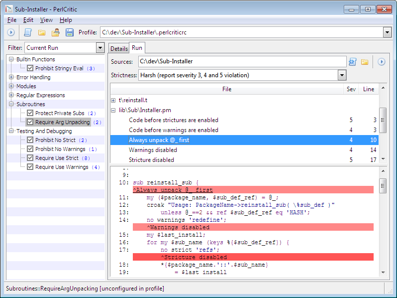

PerlCritic is a graphical interface to the Perl::Critic CPAN module, an "extensible framework for creating and applying coding standards to Perl source code". The interface lets you choose and configure the Perl::Critic::Policy modules, and run your sources through those policies and view any violations.
PerlCritic comes with the standard Perl::Critic::Policy modules from CPAN, which are based mainly on the guidelines from Damian Conway's Perl Best Practices book.
If PerlCritic is started without specifying a profile, it will attempt to load the default profile - a '.perlcriticrc' file in your HOME directory.
To create a new profile, select File|New Profile (Ctrl+N).
To load a named profile (e.g. 'MyProject.perlcriticrc') click the Open profile button or select File|Open Profile (Ctrl+O).
To load a hidden profile (e.g. '.perlcriticrc') click the Open profile directory button or select File|Open Profile Directory (Ctrl+D>.
The full path to the current profile is displayed in the toolbar.
The left pane contains the Policy Tree. Use this to browse and select the policies you want to enable in the currently loaded profile. Items in the tree have three possible states:
Unconfigured in profile (checked, gray): The policy is enabled, but not explicitly saved in the current profile.
Enabled in profile (checked, black): The policy is enabled explicitly in the current profile.
Disabled in profile (unchecked, black): The policy is explicitly disabled in the current profile.
The main policy groups have a right-click context menu with options to Unconfigure, Enable, or Disable all policies in the group.
Immediately above the Policy Tree is a drop list with filter parameters which allows you to limit the sometimes lengthy list of policies to those of a particular conceptual group. There are two additional filter parameters that have special functions:
Configured: Shows policies in the tree that are configured (either enabled or disabled) in the current profile.
Current Run: Shows policies which were flagged in the most recent policy test run.
Double clicking on any policy item opens the configuration details and documentation for that particular policy in the Details tab.
Each module will have unique configuration options which are described in its documentation. When the policy is in an unconfigured state (gray), the policy options cannot be modified. When the policy is configured either as enabled or disabled in the profile, the options available for that policy can be modified.
The Severity slider controls which severity level level the policy is triggered at during a run (see "Running PerlCritic on Sources").
Each policy has a Severity setting which can be set to a value from 1 (least important) to 5 (most important) with a slider. This setting controls which level of Strictness the policy will be included in when the policy tests are run.
Documentation on creating policies for PerlCritic can be found here:
http://search.cpan.org/dist/Perl-Critic/lib/Perl/Critic/DEVELOPER.pod
PerlCritic can be run on a single Perl file or all Perl sources in a specified directory.
Use Select single file... to chose a single file to run policy tests on.
Use Select sources directory... to specify a directory to run policy tests on. PerlCritic will run the policy tests on all Perl files in the directory, traversing all subdirectories recursively. Note: Specifying directories with many files and/or subdirectories will increase the amount of time a policy test run will take.
Each policy has a Severity level. Policy tests can be run with the following levels of Strictness:
Brutal: Reports violations of any enabled policy.
Cruel: Reports violations of enabled policies with a severity setting of 2 through 5.
Harsh: Severity 3 through 5.
Stern: Severity 4 and 5.
Gentle: Severity 5 violations only.
To run a single policy only, right click on the policy in the Policy Tree and select Run this policy only or use File|Run Selected Policy Only.
The Run tab has two main panes for displaying criticisms. When Perl Critic is run on the specified sources, the top pane is populated with a list of the files which have been flagged with criticisms. Each item in the list can be expanded to show:
The criticism summary (i.e. the reason it is a policy violation).
Policy name.
The severity level of the relevant policy.
The line number of the violation.
The column number of the violation.
Criticism, severity, and line number are shown by default.
Clicking on a criticism opens the relevant code in the bottom pane. All criticisms are inserted as highlighted text below the line containing the violation, with a caret "^" indicating the column where the violation occurred. Highlighting indicates the severity setting of the policy, from light yellow (severity 1) to red (severity 5).
Double clicking on a criticism in the top pane opens the Details tab showing the policy details for that criticism.
The View menu contains options for displaying line numbers in the bottom pane (useful for locating the violation), and for opening an additional pane for displaying detailed output from last policy test run (useful for debugging problems with policy tests).
The View|Criticism Summary sub-menu allows you to show or hide columns in the criticism summary pane.
Copyright (C) 2010 ActiveState Software Inc. All rights reserved.